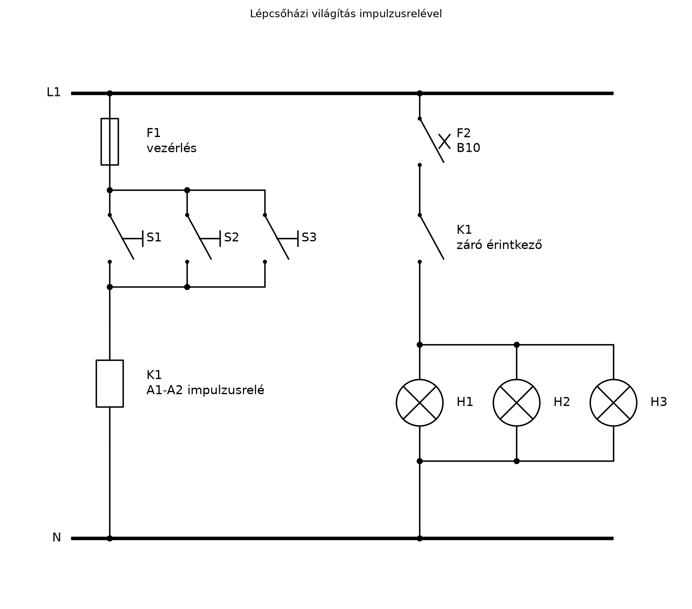

Amikor egy lakás felújításakor a régi szerelést bővíted, gyakran nem elég annyit tudni, hogy „a sárga-zöld a föld”. A kivitelezőnek látnia kell, hogy melyik vezeték hová megy, melyik kapocsra csatlakozik, és miért nem ég a lámpa akkor, amikor az egyik kapcsolót átváltod. Ehhez háromféle rajzot kell tudni olvasni: a kapcsolási rajzot, a huzalozási rajzot és a szerelési rajzot. Ezek ugyanarról az áramkörről beszélnek, csak más-más kérdésre válaszolnak.
A kapcsolási rajz a működést mutatja, a huzalozási rajz a vezetékek útját, a szerelési rajz pedig a falon elfoglalt helyet. A hibakeresés során mindháromra szükség lehet: a kapcsolási rajzból megérted, hogyan kellene működnie; a huzalozási rajzból megtalálod, hogy hol kell mérned; a szerelési rajzból pedig azt, hogy fizikailag hol van a szerelvény vagy a kötődoboz.
A villamos dokumentációkban többféle rajzot használnak, és ezeket gyakran egymás mellett, de eltérő céllal készítik.
Definíció. Az áramúti rajz – a gyakorlatban gyakran kapcsolási rajznak is nevezzük – a készülékek és vezetékek villamos kapcsolatát mutatja, a fizikai elrendezéstől függetlenül. Arra ad választ, hogyan halad az áram az áramkörben. Lehet egyvonalas, amikor több vezetőt egyetlen vonal jelöl, és többvonalas, amikor minden áramköri vezetőt külön-külön rajzolnak meg.
Definíció. A huzalozási rajz – más néven bekötési rajz – a tényleges vezeték-összekötéseket, kábelszámokat, kapocsszámokat, színeket és kötődobozos elosztásokat mutatja. Ez a dokumentum a hibakeresés és a bekötés során a leggyakorlatibb munkatérkép.
Definíció. A szerelési rajz – vagy telepítési terv – az épület alaprajzán vagy szerkezeti rajzán ábrázolja, hogy a kapcsolók, lámpák, kötődobozok, kábelnyomvonalak hol helyezkednek el. A szerelési rajz a kivitelezéshez kell: hova fúrjuk a dobozt, hova vésünk vagy vezetünk kábelcsatornát.
Szabvány. Az ábrázolási módokra a rajzjeleket az MSZ EN 60617 sorozat, a dokumentációk szerkezetét pedig az MSZ EN 61082 sorozat írja le (ellenőrizendő: az aktuális kiadás). A feszültségmentesítés és a szerelés biztonsági követelményei a villamos berendezések szabványában, például az MSZ HD 60364 sorozatban találhatók.
Az alábbi rétegábra azt mutatja, hogy egy világítási áramkör dokumentálásánál milyen rétegek épülnek egymásra:
Az ábrán jól látható, hogy egyetlen lámpakapcsolást három különböző szinten is meg kell tudni rajzolni. A kapcsolási rajz nélkül a működést érted, a huzalozási rajz nélkül nem tudod bekötni, a szerelési rajz nélkül pedig nem tudod, mit hová szerelj.
A legegyszerűbb világítási áramkör az egypólusú kapcsolás: egy kapcsolóval működtetünk egy lámpát vagy egy lámpacsoportot. Villamos szempontból a kapcsoló a fázisvezetőt szakítja meg, a nullavezető közvetlenül a lámpához megy.
Szabály. Világítási áramköröknél a kapcsolót a fázisvezetőbe kell kötni, a nullavezetőt nem kapcsoljuk. Ha a nullát szakítanánk meg, a lámpa ugyan kialudna, de a foglalat fázisoldali csatlakozója feszültség alatt maradhat, ami áramütésveszélyes.
A kapcsolási rajz így néz ki:

A rajzról leolvasható áramút: L1 → Q1 → H1 → N. A
kapcsoló nyitott állásában nincs zárt áramkör, a lámpa nem ég. Zárt
állásában a fázis eljut a lámpához, az áram a nullán visszafolyik, a
lámpa világít.
A huzalozási rajz ebből úgy lesz, hogy a kábelek tényleges útját, az
erek színét és a kapcsokat is bejelöljük. Tegyük fel, hogy a
lakáselosztóból a kötődobozba érkezik egy NYM-J 3×1,5
kábel, a kapcsolóhoz megy egy NYM-J 3×1,5 kábel, a lámpához
pedig ugyancsak NYM-J 3×1,5 kábel.
Kidolgozott példa (egypólusú kapcsolás kötődobozos huzalozása). Az alábbi táblázat azt mutatja, hogy egy központi kötődobozos szerelésnél melyik ér milyen funkciót kap.
| Kábel | Érszín | Jelölés | Kötődobozban csatlakozik |
|---|---|---|---|
| Elosztó felől | barna | L1 (fázis) | sorkapocs: fázis-gyűjtő |
| Elosztó felől | kék | N (nulla) | sorkapocs: nulla-gyűjtő |
| Elosztó felől | zöld-sárga | PE | PE-gyűjtő |
| Kapcsolóhoz | barna | fázis le | fázis-gyűjtővel összekötve |
| Kapcsolóhoz | kék, a végein barna jelöléssel | kapcsolt fázis vissza | lámpa felé menő fázis |
| Kapcsolóhoz | zöld-sárga | PE | PE-gyűjtő |
| Lámpához | barna | kapcsolt fázis | kapcsoló visszatérője |
| Lámpához | kék | N | nulla-gyűjtő |
| Lámpához | zöld-sárga | PE | PE-gyűjtő |
A bekötés során tehát a kapcsolóhoz lemenő barna ér viszi a fázist, a kék ér hozza vissza a kapcsolt fázist, a lámpa felé pedig a barna ér adja a kapcsolt fázist, a kék pedig a nullát.
Megjegyzés. A háromerű (3G, -J) kábelben nincs fekete ér: a kapcsolóhoz menő kábel kék erét fázisként használjuk, ezért mindkét végén tartósan meg kell jelölni (barna jelölőgyűrű, szigetelőcső; ellenőrizendő: MSZ EN 60445, MSZ HD 60364-5-51); a zöld-sárga eret más célra használni tilos. Ha fekete ér kell, négy- vagy ötérű kábelt használunk (4G: barna, fekete, szürke, zöld-sárga; 5G: barna, fekete, szürke, kék, zöld-sárga – ellenőrizendő: MSZ EN 60445 és a kábel-termékszabvány). A kötődobozban minden csoport külön sorkapocsba kerül, így a bekötés áttekinthető és mérhető.
A soros (csillár)kapcsoló egy közös bemenettel (fázis) és két kimenettel két lámpacsoportot kapcsol, a két billentyűvel külön-külön. A kétpólusú kapcsoló ettől eltérő: egy karral a fázist és a nullát is megszakítja.
A soros kapcsolás áramútja szövegesen:
L1 → Q1 (közös bemenet) → az egyik billentyű kimenete
→ H1 lámpacsoport → N, a másik billentyű kimenete
→ H2 lámpacsoport → N; a két lámpacsoport nullája közös. A
kapcsolást a Világítási áramkörök: egypólusú,
soros, váltó és kereszt alfejezet tárgyalja részletesen.
Megjegyzés. A kétpólusú kapcsoló érintkezői a fázis- és a nullavezetékben is megszakítanak; nem keverendő össze a soros (csillár)kapcsolóval. Nedves vagy kültéri környezetben, illetve bizonyos fogyasztóknál követelmény lehet, hogy a kapcsoló mindkét pólust leválassza. A rajzon két kapcsolóérintkezőt rajzolnak, amelyeket egy szaggatott vonal köt össze, jelezve, hogy egyetlen mechanikus kar működteti őket.
A váltó kapcsolás két kapcsolóval vezérel egy lámpát, például egy lépcső alsó és felső végén. A váltó kapcsoló egy közös érintkezővel és két váltóérintkezővel rendelkezik. A két kapcsoló váltóérintkezőit keresztben összekötjük, és a lámpa akkor ég, ha a két közös érintkező ugyanarra a keresztágra kapcsolódik.
A kapcsolási rajz a következő:
A rajzon a váltó kapcsolókat itt egy közös pontból induló
váltóérintkezőkkel ábrázoltuk. A valódi szerelvényeken a kapocsjelölés
gyártófüggő; gyakran a közös kapocs L, a két váltóér
1 és 2, vagy COM,
NO, NC jelölést kap. A bekötés előtt mindig a
szerelvény kapocstábláját kell ellenőrizni.
A kapcsolás logikája egyszerű:
| Q1 közös kapcsolás | Q2 közös kapcsolás | Lámpa |
|---|---|---|
| Felső ág | Felső ág | ég |
| Felső ág | Alsó ág | nem ég |
| Alsó ág | Felső ág | nem ég |
| Alsó ág | Alsó ág | ég |
Kidolgozott példa (hibakeresés váltó kapcsolásnál). Egy panasz szerint a lámpa csak az egyik kapcsolóról kapcsolható ki. A huzalozási rajz alapján először a kapcsolók kapcsait kell lemérni. Feszültségmentesítés után multiméterrel ellenőrizzük a két kapcsoló közötti két keresztág folytonosságát. A keresztágak egymás közötti felcserélése nem hiba: a váltókapcsolás működését nem rontja el, csak az „ég/nem ég” állás-párosítást fordítja meg. Ha az egyik kapcsolóról nem kapcsolható a lámpa, a tipikus ok, hogy valamelyik kapcsolón a közös kapocsra keresztág, a váltókapocsra pedig a fázis vagy a lámpa felé menő vezeték került, vagy az egyik keresztág szakadt. Mérés (feszültségmentesen, az öt szabály után): 1) a két keresztág folytonossága kapcsolótól kapcsolóig; 2) az elosztó felőli fázisér azonosítása a Q1 közös kapcsán; 3) a lámpa felé menő ér azonosítása a Q2 közös kapcsán. A javítás: feszültségmentes állapotban a vezetékeket a kapocstábla szerint visszakötni, majd működéspróbát végezni.
Kettőnél több kapcsolási hely esetén a két váltó kapcsoló közé keresztváltó kapcsolókat építünk. A keresztváltó négy csatlakozóponttal rendelkezik, és a két bejövő vezeték párosítását cseréli fel. A rajzon a keresztváltót is szaggatott vonallal összekötött érintkezőkkel ábrázolják. Bekötésénél mindig a kapocstáblán jelölt párokat kell követni; a hibás párosítás miatt a váltókapcsoló logika felborul.
Az ábrán a Q2 keresztváltó négy kapcsa közül a bal oldali kettőre az a és b, a jobb oldali kettőre a c és d keresztág csatlakozik. Alapállásban a keresztváltó egyenesen köt (a–c, b–d, folytonos vonal), átváltva keresztben (a–d, b–c, szaggatott vonal). Így bármelyik kapcsoló átváltása megfordítja a lámpa állapotát; a HTML-változatban a kapcsolókra kattintva ez ki is próbálható, és a keresztváltó kikapcsolásával a fenti váltókapcsolás táblázata is ellenőrizhető.
A lépcsőházi világítás rajza több szempontból is eltér. A cél az, hogy a folyosón vagy lépcsőházban elhelyezett több nyomógomb ugyanazt a lámpakört vezérelje. Ezt ma általában impulzusrelével vagy lépcsőházi időrelével oldják meg.
Az impulzusrelé tekercsére párhuzamosan kötött nyomógombok adják a
vezérlőjelet. Minden lenyomás egy impulzust ad, a relé érintkezője
átbillen, a lámpa be- vagy kikapcsol. A rajzon a nyomógombok jele
nyitott érintkező, a relé tekercse K1, a munkaérintkezője
pedig K1 jelölést kap. A lépcsőházi időrelé hasonló, de a
bekapcsolás után egy beállított idő leteltével önműködően kikapcsol. Ez
energiamegtakarítást és biztonságot ad a közlekedőterületeken.
Az alábbi kapcsolási rajz a vezérlő- és a főáramkört egymás mellett mutatja:

A rajzról leolvasható: bármelyik nyomógomb megnyomása ugyanazt a K1 tekercset kapcsolja feszültségre, ezért a lámpák mindhárom helyről be- és kikapcsolhatók; a lámpák árama nem a nyomógombokon, hanem a K1 érintkezőjén folyik.
Figyelem. A lépcsőházi automata nyomógombjai többnyire 230 V-os hálózati feszültségen működnek, ugyanúgy, mint a lámpakör; törpefeszültségű (pl. 12/24 V) nyomógombkör csak akkor van, ha a terv így írja elő, és ezt a terven egyértelműen jelölni kell. A rajzolásnál külön választjuk a főáramkört (lámpa, megszakító, reléérintkező) és a vezérlőáramkört (nyomógombok, relétekercs).
A huzalozási rajz akkor jó, ha a rajzból egyértelműen azonosítható minden vezeték és kapocs. A gyakorlatban ehhez három adatot kell megadnunk:
W1,
W2, amely a kábelnyomvonallal együtt megmondja, melyik
kábelről beszélünk.W2/1,
vagy a rajzjel mellett a szín: barna, kék,
zöld-sárga.-Q1:1,
-H1:PE, amely megmondja, hogy a vezeték a készülék melyik
kapcsára kerül.Példa. Ha egy huzalozási rajzon a W2
kábel barna erét a -Q1:L kapocshoz, kék (barnával jelölt)
erét a -Q1:1 kapocshoz rendeljük, akkor a szerelés során a
kapcsolóhoz menő kábel barna erét a Q1 kapcsoló L, a jelölt kék erét az
1-es kapcsára kell csatlakoztatni (lásd az alábbi huzalozási rajzot). Ha
a későbbi mérésnél a -X1:4 és a lámpafoglalat fázispontja
között szakadást mérünk, azonnal tudjuk, hol keressük a hibát.
Az ábra az egypólusú kapcsolás huzalozási rajza egy központi kötődobozzal. Minden érnél leolvasható a kábelszám (W1, W2, W3), az érszín (betűkóddal is: BN barna, BU kék, GNYE zöld-sárga) és a sorkapocs (-X1:1…-X1:4). A háromerű kábelben nincs fekete ér, ezért a kapcsolóhoz menő W2 kábel kék ere viszi vissza a kapcsolt fázist; ezt az eret mindkét végén tartósan fázisként (barna jelöléssel) meg kell jelölni (ellenőrizendő: MSZ EN 60445). A HTML-változatban egy érre kattintva a kapcsolási rajz megfelelő szakasza kiemelődik.
A rajzok olvasásánál mindig a rajz–valóság–mérés hármast használjuk. Először a rajz alapján megállapítjuk, minek hová kellene kötve lennie. Ezután a valós szerelésben megnézzük, hogy a színek, kapocsszámok és kábelek tényleg ott vannak-e. Végül a feszültségmentesen végzett folytonosság- vagy szigetelési méréssel igazoljuk, hogy a vezetékek a rajz szerint összeköttetésben vannak.
Valós eset. Egy társasházi lakásban a felújítás során a villanyszerelő a régi kötődobozokban nem talált kapocsfeliratokat. A lakástulajdonos kérte, hogy a lépcsőfeljáró fölötti lámpát két helyről lehessen kapcsolni. A szerelő először a kapcsolási rajzot készítette el, majd a huzalozási rajzon berajzolta a meglévő kábelnyomvonalakat. Feszültségmentesítés után minden vezetéket multiméterrel beazonosított, és a kötődobozban feliratozta a kapcsokat. A beszerelés után a váltó kapcsolás mindkét kapcsolóról jól működött. A tanulság: ha a szerelés közben dokumentáljuk a kapcsokat, a jövőbeni hibakeresés percek alatt elvégezhető.
Biztonsági korlát. Az alábbi feladat dokumentáció-készítésre vonatkozik. Ha a kapcsolást tanműhelyi környezetben meg is építed, azt legfeljebb törpefeszültségen, jogosult oktató felügyeletével végezd. Hálózati feszültségen önállóan ne dolgozz!
Ha mégis feszültségmentes, valós szerelést készítesz, mindig a feszültségmentesítés öt biztonsági szabálya szerint járj el:
Eszközök, anyagok: ceruza, radír, vonalzó, villamos rajzsablon, színes ceruzák vagy szoftver, kábelcímkék, sorkapocsterv-táblázat.
Lépések:
W1,
W2, W3, W4.W2 / kék (barnával jelölve, kapcsolt fázis) / -Q2:1.Ellenőrzési pont. A huzalozási rajz akkor megfelelő, ha minden vezetéknek van azonosítója, minden kapocs meg van nevezve, és a kapcsolási rajzról egyértelműen leolvasható a kapcsolólogika.
1. feladat (A) Rajzold fel az egypólusú világítási kapcsolás kapcsolási rajzát: jelölj L1, N, Q1 és H1 elemeket, és írd le az áramutat bekapcsolt állapotban.
2. feladat (A) Melyik rajzfajtát használod ahhoz, hogy megtudd, hol kell a falon a kapcsoló, és melyiket ahhoz, hogy megtudd, hány ér megy a kapcsolóhoz?
3. feladat (B) Egy váltó kapcsolásnál a fázis az első kapcsoló közösére érkezik, a második kapcsoló közöse pedig a lámpa fáziscsatlakozójára megy. Rajzold le a huzalozási kapcsolatot, és jelöld be a kapcsok egy lehetséges azonosítását!
4. feladat (B) Egy huzalozási rajzon az látható,
hogy a lámpához W3 kábel megy, a barna ér az
-X1:4 sorkapocsra, a kék ér az -H1:N, a
zöld-sárga ér az -H1:PE kapocsra csatlakozik. Milyen
funkciójú mérést végeznél feszültségmentesen annak ellenőrzésére, hogy a
barna ér valóban a lámpa fázispontjára megy?
5. feladat (C) Egy lépcsőházi világítási kapcsolásban három nyomógomb működtet egy impulzusrelét. Rajzold le a vezérlőáramkör elvi rajzát, és jelöld a párhuzamos kapcsolatot a nyomógomboknál. Mi történik, ha az egyik nyomógomb beragad?
6. feladat (D) Egy váltó kapcsolás hibás: a lámpa az egyik kapcsolóról bekapcsolható, a másikról nem. Milyen huzalozási hibára utalhat? Írd le a hibakeresési lépéseket feszültségmentes mérésekkel.
Önellenőrzés – válaszok
Feladatok megoldása
1. megoldás. A kapcsolási rajzon L1 a
fázis, Q1 a kapcsoló, H1 a lámpa,
N a nulla. Bekapcsolt állapotban az áramút:
L1 → Q1 → H1 → N.
2. megoldás. A szerelvények fizikai helyét a szerelési rajz, a kapcsolóhoz menő erek számát és bekötését a huzalozási rajz mutatja.
3. megoldás. Egy lehetséges ábrázolás: az első
kapcsoló Q1:1 közös kapcsára kötjük az L1 fázist, a
Q1:2 és Q1:3 váltóérintkezőket összekötjük a
második kapcsoló Q2:2 és Q2:3
váltóérintkezőivel, majd a második kapcsoló Q2:1 közös
kapcsát a lámpa fáziscsatlakozójához vezetjük. A lámpa másik
csatlakozója az N; a fém lámpatest a PE-re csatlakozik.
4. megoldás. Feszültségmentes állapotban a
multiméterrel folytonosságmérést végeznék: az
-X1:4 sorkapocs és a lámpafoglalat fázispontja között kis
ellenállást kell kapni, miközben a nulla és a PE ága más kapcsokra
azonosítható.
5. megoldás. A három nyomógomb egymással párhuzamosan van kötve, mindegyik az impulzusrelé tekercsére ad jelet. Ha egy nyomógomb beragad, a K1 impulzusrelé tekercse tartósan feszültséget kap: a relé az utolsó állapotában marad, a többi gomb hatástalan, és a nem tartós üzemre méretezett tekercs túlmelegedhet (ellenőrizendő: gyártói adatlap). Tünet: egyik gombbal sem kapcsolható a világítás, a relé melegszik vagy zümmög. Javítás: feszültségmentesítés (öt szabály) után a hibás gomb cseréje; az időrelés változatoknál gyakori a beragadt-gomb-figyelés funkció.
6. megoldás. Ha a lámpa csak az egyik kapcsolóról
kapcsolható, akkor valószínűleg az egyik váltó kapcsolón a közös kapocs
és egy keresztág fel van cserélve, vagy az egyik keresztág szakadt (a
keresztágak egymás közötti felcserélése nem hiba). Feszültségmentesítés
után ellenőrizni kell a kapcsolók kapocstábláját, majd
folytonosságméréssel azonosítani a Q1 és Q2
közötti keresztágakat. Ezután vissza kell kötni a kapocstábla szerint,
és működéspróbát végezni.
A villamos rajzok olvasása a villanyszerelő napi munkája. A kapcsolási rajz a villamos működést, az áramutat és a kapcsolólogikát mutatja; a huzalozási rajz a vezetékek tényleges útját, kábelszámait, érszámait, színeit és kapocsazonosítóit; a szerelési rajz a szerelvények és nyomvonalak fizikai helyét. A világítási alapkapcsolások: egypólusú, soros (csillár), váltó, keresztváltó és lépcsőházi; a kétpólusú kapcsoló (fázist és nullát is megszakít) ettől külön fogalom. A kapcsoló mindig a fázist szakítja meg, a nullát nem kapcsoljuk. A huzalozási rajz minden vezetéknél legalább három adatot tartalmazzon: kábelszám, érszám vagy érszín, és kapocsazonosító. A rajz–valóság–mérés hármas a hibakeresés alapja: először a rajz, majd a valódi bekötés, végül a feszültségmentes mérés. A bemutatott kapcsolási rajzokat a későbbi alfejezetek használják a tervrajzokon és a gyakorlati bekötéseknél, különösen az Alaprajzok, fővezetéki terv és egyvonalas rajz és a Világítási áramkörök: egypólusú, soros, váltó és kereszt fejezetekben.
Az alfejezet a magyarországi és európai gyakorlat szerint készült. A rajzjelek az MSZ EN 60617, a dokumentációk szerkezete az MSZ EN 61082 sorozat alapján hivatkozott; a pontos szakasz- és táblázatszámokat, valamint a gyártóspecifikus kapocsjelöléseket a kiadás előtt ellenőrizni kell. A feszültségmentesítés és a szerelési szabályok a MSZ HD 60364 sorozat szerint érvényesek, de konkrét határértékeket ez az alfejezet nem ad meg.